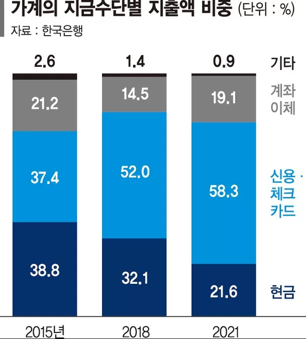
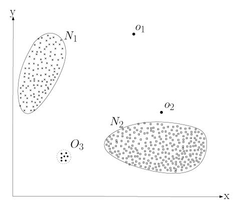
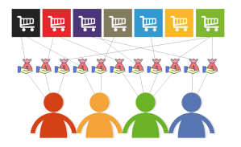

Research on Anomaly Detection in Credit Card Fraud Transactions Using GCN
Department of Statistics, Jeonbuk National University
Contents
Introduction
Related studies
Data Description
Proposed method
Real data analysis
Introduction
Introduction
- With the advancement of information technology (IT), many countries are reducing the use of cash and opting for credit cards. According to the ‘2021 Survey on Cash Usage Behavior by Economic Entities’ announced by the Bank of Korea in 2022 (which is conducted every three years), the proportion of cash usage in South Korea has dropped significantly.
Introduction
Figure 1: 2021 Survey on Cash Usage Behavior by Economic Entities
Introduction
- As cash liquidity decreases, transactions through virtual currencies, cards, and other electronic means are on the rise. While the use of credit cards offers convenience for consumers and facilitates analysis of spending patterns, it also raises concerns about card fraud. If card issuers and consumers fail to detect fraudulent transactions, it can lead to significant financial losses.
- 이상치 빼기
Introduction
- Credit card fraud transactions, such as these anomalies, refer to patterns that do not conform to a well-defined notion of normal behavior.(Chandola, Banerjee, and Kumar 2009)
Introduction
Figure 2: A simple example of anomalies in a two-dimensional data set.
- Figure 2 illustrates anomalies in a simple two-dimensional dataset. In the data, most observations lie within two normal regions, N1 and N2, and points sufficiently distant from these regions, such as o1 and o2, and points in region O3, are defined as anomalies.
Introduction
- Existing research for outlier detection includes methods such as Classification, Clustering, Nearest Neighbor-Based, and Statistical approaches. However, research utilizing conventional methodologies for fraud transaction detection often fails to capture complex fraud patterns. Thus, in this study, we aim to detect outliers in fraudulent transactions using graph-based techniques.
- 관련연구: 신용카드 분석 / GCN anom /
fraud detection/ gcn 교집합이 제일 좋음
Introduction
- In graph-based analysis, there are bipartite graphs and tripartite graphs. Bipartite graphs have difficulty detecting anomalies in individual transactions. Tripartite graphs allow for easier analysis at the individual level, but they are time-consuming and complex.


돌린 결과 !!
위의.. 사진 암튼 어케 해보자
Introduction
Therefore, in this study, we propose a method to enhance the connectivity of graphs using the time differences between transactions. Through this method, we aim to address the following questions:
Is it easier to identify individual transactions compared to non-graph-based research methods?
Is it simpler compared to graph-based research methods?
Introduction
To begin research on fraud detection based on graph analysis, let’s first understand the concept of a graph.
Graph \(G = (V,E)\) with \(N\) nodes \(i \in v\) and \(|E|\) edges \((i,j) \in E\)
\(A \in \mathbb{R}^{N \times N}\): adjacency matrix of \(G\)
\(X \in \mathbb{R}^{N \times P}\) is the matrix of node features
The graph \(G\) consists of nodes and edges denoted by \((V,E)\), where \(V\) represents the set of nodes and \(E\) represents the set of edges. Each node and edge has its own features.
“그래프 간단한 특성? 사진()”
Related Studies
Related Studies 정확하게 어떤 것을 넣어야할지 잘 모르겠담. .흠..
Data description
Data description
The dataset under consideration contains credit card transaction records from European cardholders captured in the month of September 2013. It encompasses transactions that were conducted across a network of 800 merchants and includes data from 1,000 individual cardholders. Originally, this dataset is composed of 23 distinct features that offer various insights into each transaction. However, for the purposes of this study, we have selectively utilized only a subset of these features that are deemed most relevant to our analysis objectives.
다른 데이터들을 찾아봤는데 연구에 필요한 (인덱스나 시간컬럼)이 없어서 사용할 수 없다는 내용은 구두로만 하는게 좋음
Data description
| Variable | Description |
|---|---|
| index | Identifier for each row, row number. |
| cc_num | The customer’s credit card number. |
| trans_date_and_time | Trading hours. |
| amt | Transaction amount. |
| is_fraud | Indicate whether the transaction is fraudulent (0: legitimate, 1: fraudulent). |
[Table 1: A list of data variables used in the study]
Data description
원 데이터 표 형식으로 추가?
Data description
활용 데이터 표 형식으로 추가?
Proposed method
Proposed method
Let’s say the given data is \(\bf X, \bf y\), where \(\bf X\) is a matrix with \(N\) rows and \(\bf y\) is a vector of length \(N\). \(\bf y\) contains labels indicating the presence of fraud, while \(\bf X\) represents the design matrix necessary for predicting \(\bf y\). We interpret the given data as a graph. Let \(\cal I\) be the set of \(\tt cc\_num\).
Proposed method
Moreover, let \(\cal T_i, i \in \cal I\), be the set of transaction times for the \(i\)-th customer. The given data can be expressed as \(\cal D:=\{(\bf X_{i,t},{\bf y}_{i,t}): i \in {\cal I}, t \in {\cal T}_i \}\). To represent the graph structure, we need to define nodes and edges. The set of nodes is defined as \(\cal V = \{v_{i,t}: i \in {\cal I}, t \in {\cal T}_i \}\). Note that \(|{\cal V}|=\sum_{i \in {\cal I}} |{\cal T}_i|=N\). The links between data points are defined as \({\cal E} = \bigcup_{i \in {\cal I}} \{ (v_{i,t},v_{i,s}) : t,s \in {\cal T}_i \text{ and } t\neq s \}\), considering connections only within the same customer.
Proposed method
For a fixed \(i \in {\cal I}\), the \((t,s)\)-th elements of \({\bf W}_i\) are defined as \(\exp(\frac{-|t-s|_2^2}{\theta})\) where \(t,s \in {\cal T}_i\), and the \(N \times N\) weight matrix \({\bf W}\) is defined as the following block matrix:
\({\bf W}=\begin{bmatrix} {\bf W}_1 & {\bf 0} & {\bf 0} & \dots & {\bf 0} \\ {\bf 0} & {\bf W}_2 & {\bf 0} & \dots & {\bf 0} \\ {\bf 0} & {\bf 0} & {\bf W}_3 & \dots & {\bf 0} \\ \dots & \dots & \dots & \dots & \dots \\ {\bf 0} & {\bf 0} & {\bf 0} & \dots & {\bf W}_{|{\cal I}|} \end{bmatrix}\)
Note that if \({\bf W}={\bf I}\), it implies a classical tabular data structure rather than a graph data structure. \({\bf A}\) is the adjacency matrix corresponding to \({\bf W}\).
Proposed method
(Kipf and Welling 2016) To predict \({\bf y}\), we stacked graph convolution layers as follows:
\[{\bf H}^{(l+1)} = \sigma\big({\bf D}^{-1/2}{\bf A}{\bf D}^{-1/2}{\bf H}^{(l)} {\bf \Theta}^{(l)}) \big)\]
Here, \({\bf D}\) is the degree matrix of \({\bf A}, {\bf \Theta}^{(l)}\) represents the learnable parameters, and \(\sigma\) denotes the activation function. \({\bf H}^{(l)}\) is the input for the \(l\)th layer, and \({\bf H}^{(l+1)}\) is the output, where for \(l=0, {\bf H}^{(0)}={\bf X}\), and the output of the final layer is defined as \({\bf y}\).
위의 내용은 포스터 때 했던 건데 줄글 형식보닩 단답으로 표시해주는게 좋을 듯
Experimental Research
Experimetal setting
실험1
원 데이터 pyod / autogluon / proposed
실험2
df50 pyod / autogluon / proposed
실험3